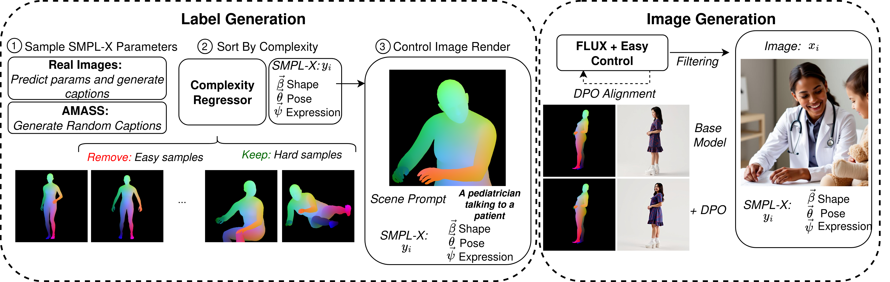

PoseDreamer
Scalable Photorealistic Human Data Generation
with Diffusion Models

TL;DR
We present PoseDreamer, a scalable pipeline for generating photorealistic human datasets with precise 3D pose control. The system combines controllable generation with Direct Preference Optimization for control alignment, hard sample mining, and filtering to produce a large synthetic dataset with reliable annotations.

Abstract
Acquiring labeled datasets for 3D human mesh estimation is challenging due to depth ambiguities and the inherent difficulty of annotating 3D geometry from monocular images. Existing datasets are either real, with manually annotated 3D geometry and limited scale, or synthetic, rendered from 3D engines that provide precise labels but suffer from limited photorealism, low diversity, and high production costs.
In this work, we explore a third path: generated data. We introduce PoseDreamer, a novel pipeline that leverages diffusion models to generate large-scale synthetic datasets with 3D mesh annotations. Our approach combines controllable image generation with Direct Preference Optimization for control alignment, curriculum-based hard sample mining, and multi-stage quality filtering. Together, these components naturally maintain correspondence between 3D labels and generated images, while prioritizing challenging samples to maximize dataset utility.
Using PoseDreamer, we generate more than 500,000 high-quality synthetic samples, achieving a 76% improvement in image-quality metrics compared to rendering-based datasets. Models trained on PoseDreamer achieve performance comparable to or superior to those trained on real-world and traditional synthetic datasets.
Method

Direct Preference Optimization
We use Direct Preference Optimization to enhance control precision, significantly reducing OKS error on a held-out dataset compared to the base model.

Key Results
FID 1.72 · IS 9.78
With precise 3D mesh annotations
OKS error reduction
Outperforms Rendering-Based Data on ITW Benchmarks
As sole training data, PoseDreamer beats BEDLAM on all in-the-wild benchmarks (PVE ↓).
| Training Data | UBody ↓ | MPII ↓ | MSCOCO ↓ |
|---|---|---|---|
| BEDLAM | 146.3 | 141.1 | 163.7 |
| PoseDreamer | 97.6 | 122.3 | 129.4 |
Complementary to Existing Synthetic Data
Training on PoseDreamer combined with BEDLAM — just two datasets — consistently matches or outperforms baselines that rely on five or more real and synthetic datasets. This holds across multiple model scales (ViT-S and ViT-L backbones) and dataset sizes (up to 1.5M instances), suggesting that high-quality generated data can replace the need for curating many heterogeneous sources.
Domain-Specific Generation

Replacing 30K random images with yoga-specific samples cuts PVE from 199.6 to 171.1 on MPII Yoga.
Citation
@article{prospero2026posedreamer,
title = {PoseDreamer: Scalable Photorealistic Human Data Generation with Diffusion Models},
author = {Prospero, Lorenza and Kupyn, Orest and Viniavskyi, Ostap and Henriques, Joao F. and Rupprecht, Christian},
journal = {arXiv preprint},
year = {2026}
}